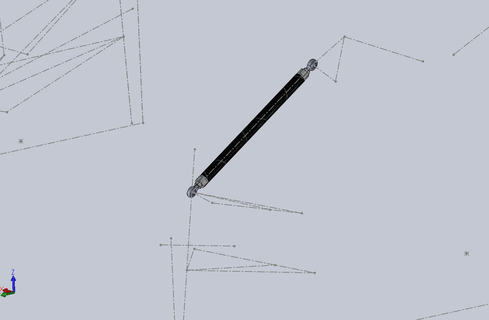
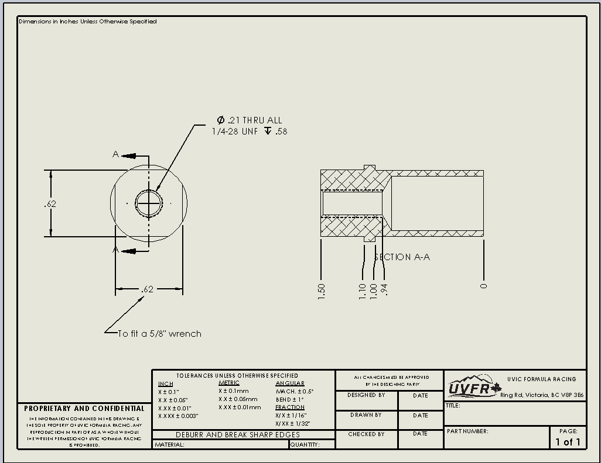

FSAE Push Rod Design
SolidWorks • Load Analysis (Excel) • Thread Design (1/4-28 UNF) • Manufacturing Drawings
Problem
Design a lightweight and structurally reliable push rod for the UVic Formula SAE suspension system. The component needed to withstand dynamic axial loads while maintaining minimal mass, proper thread engagement, and manufacturability using standard rod-end hardware.
Approach
- Modeled the push rod tube and threaded inserts in SolidWorks based on suspension geometry.
- Designed 1/4-28 UNF threaded ends with sufficient engagement depth for load transfer.
- Developed an Excel-based load calculator to estimate axial forces from suspension loading.
- Verified wrench clearances, tolerances, and section views through detailed drawings.
Results
- Lightweight tubular push rod optimized for primarily axial loading.
- Manufacturing-ready drawing package including section views and tolerances.
- Thread geometry and engagement depth verified to mitigate stripping risk.
What I’d improve next
- Perform FEA to evaluate buckling behavior under compressive suspension loads.
- Compare material options (4130 steel vs 7075-T6 aluminum) for stiffness-to-weight optimization.
Gallery

